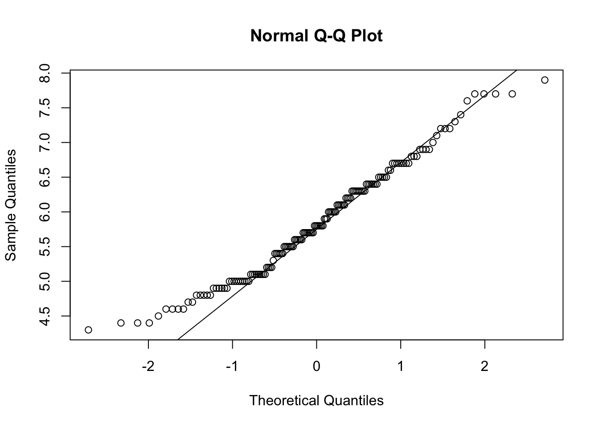
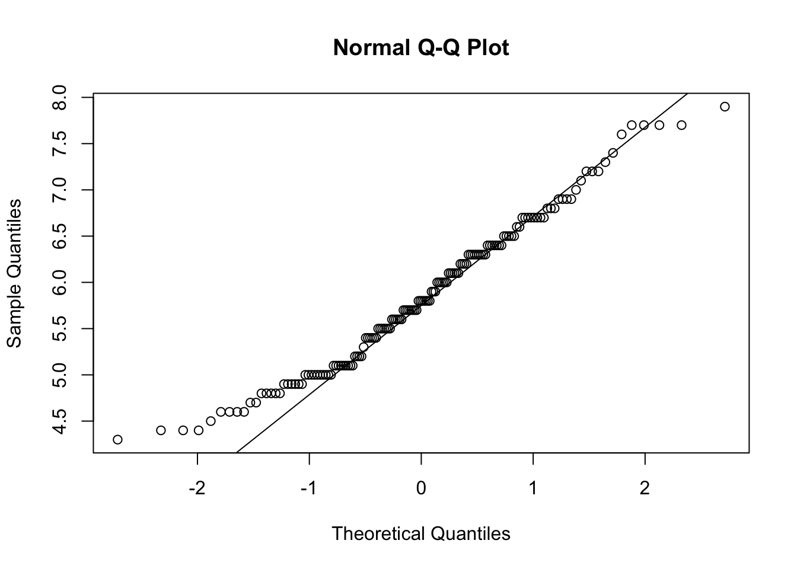
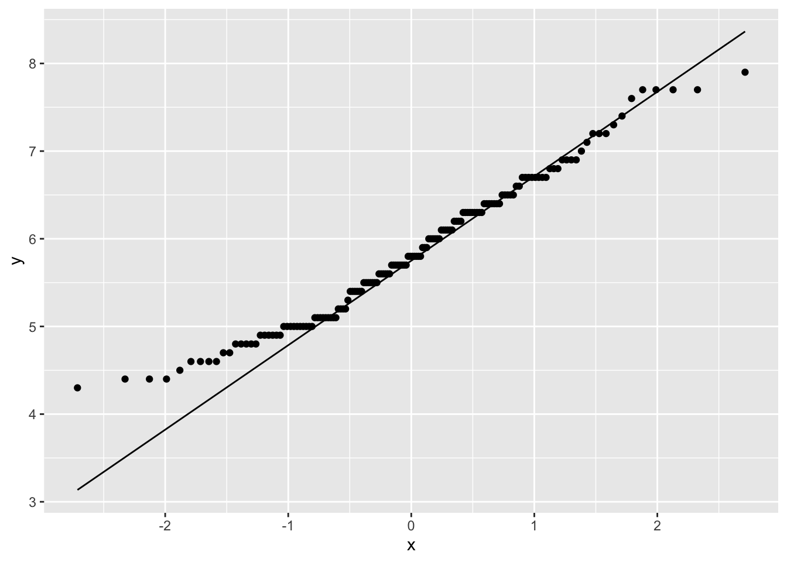
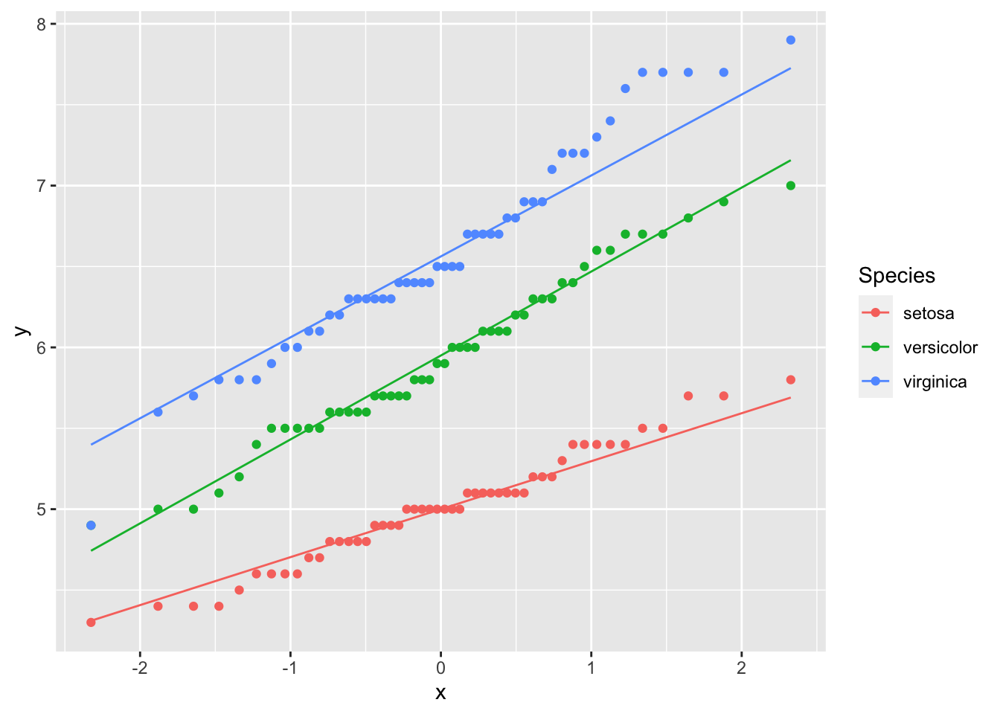
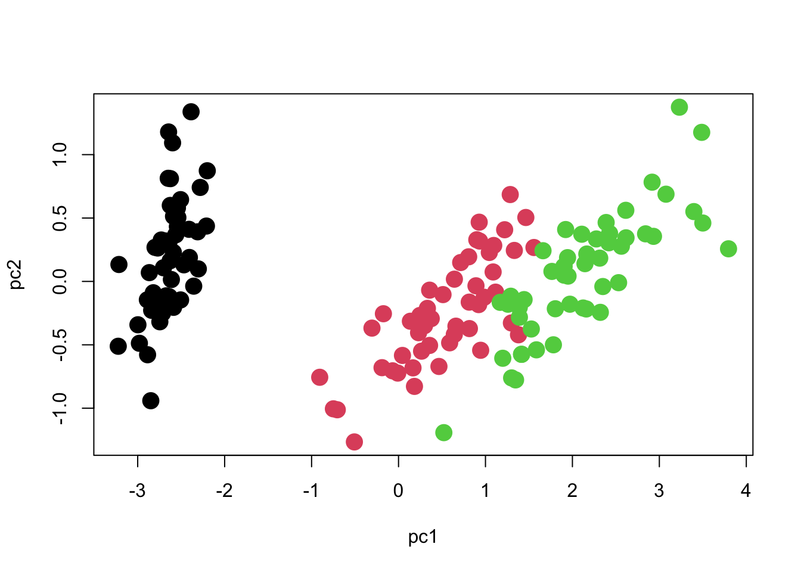
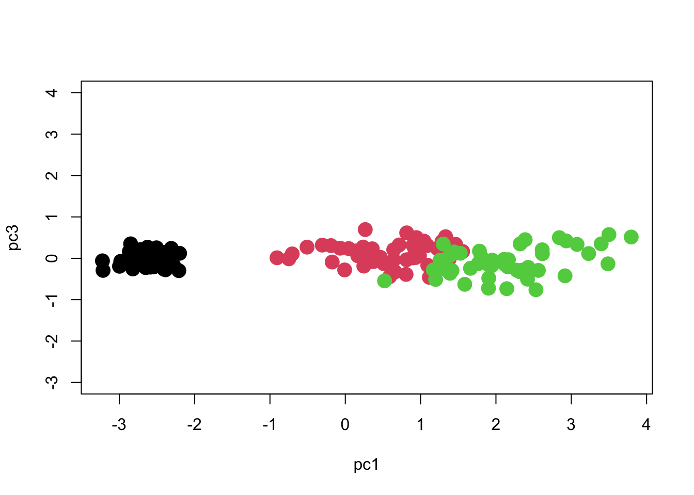
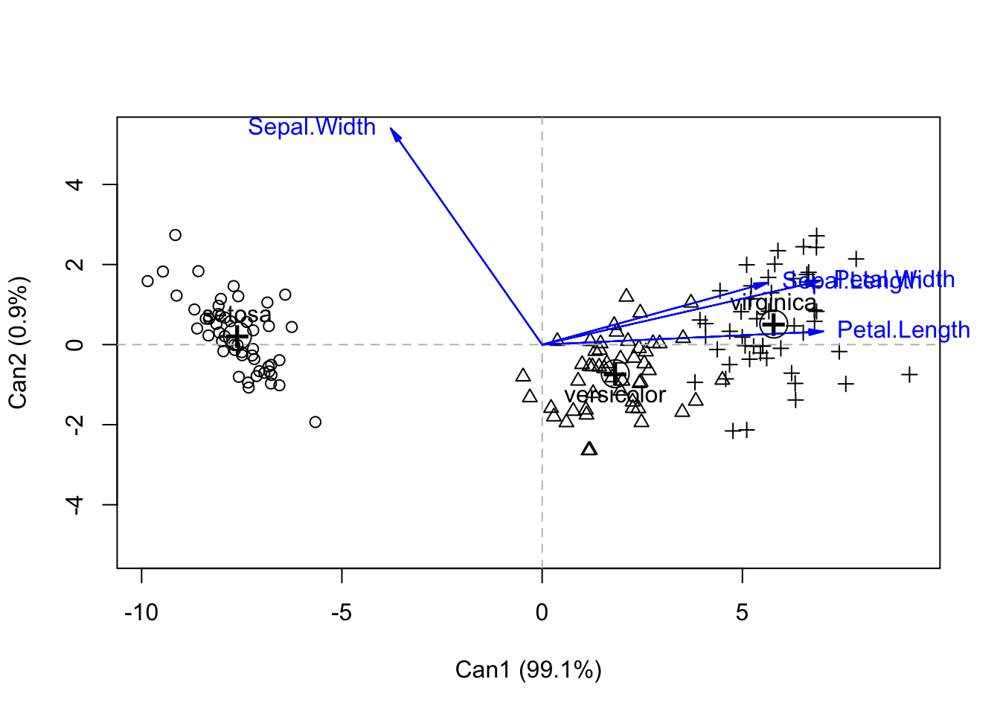

qqnorm(iris$Sepal.Length)
qqline(iris$Sepal.Length)
At the end of this lesson you will:
Most of us have some multivariate data that we would like to explore. After we have gone through the task of making bivariate plots, checking for errors in the data, and finalizing the raw data, it is time to start looking for patterns and exploring.
The first step you will often think about is do you have to log-transform your data? Or do some other transformation? You may need to, for example, if you are doing morphometrics and have a lot of size variation.
There are several reasons why you might need to do a transformation:
You may also expect your data to follow a power law, in which case a log-transformation will make the data linear. For example, things that scale with body size tend to have the form:
\[ Y = aMass^b \] \[ log(Y) = log(a) + b\times log(Mass) \]
If you plan to do parametric statistics, for example many forms of regression, ANOVA, etc. one of the major assumptions is that the errors are normally distributed.
That is, the relationship follows the form:
\[ Y \sim X + e \]
Which is read as Y is proportional to X plus random error. Where e ~ N or the errors or deviations from this relationship follow a normal distribution. Note that this assumes that X is known without error.
A convenient tool for checking the normality of continuous data is qqnorm() which plots the QQ quantiles of the data. If it is normally distributed, the points should fall on a straight line:
qqnorm(iris$Sepal.Length)
qqline(iris$Sepal.Length)
Or the ggplot2 version:
require(ggplot2)Loading required package: ggplot2require(magrittr) # for piping using %>%Loading required package: magrittrggplot(iris, aes(sample=Sepal.Length)) +
stat_qq() +
stat_qq_line()
This data looks pretty good, except for some deviations along the edges. Most data will not ever be perfectly normal, you will get a sense of what is acceptable with more experience.
However, we do know that this data contains three species – what happens if you were to look at the data by species?
iris %>%
ggplot( aes(sample=Sepal.Length)) +
stat_qq( aes(col=Species)) +
stat_qq_line( aes(col=Species) )
Deviations from normality are not the end of the world, and often a little is tolerated. What can be more problematic is strong skew. For that you will really want to transform the data:
Right skewed data is data with a long tail to the right (the positive side). Left skeweed data has along tail to the left. Here are a few methods. There are more
| Skew | Transform | Code |
|---|---|---|
| strong right | cube root | z = x^(1/3) |
| square root | z = x6(1/2) |
|
| log | z = log(x) |
|
z = log10(x) |
||
z = log2(x) |
||
| strong left | square | z = x^2 |
Will you want to do an analysis of the data along with a size-corrected dataset? If shape variation is interesting for your data (i.e., do they differ in shape when we control for differences in size, or are they relatively larger or smaller?), then you may want to find some sort of size-adjustment. Popular methods include
Now you are ready to begin. Often we have many variables measured and we suspect that many of the variables are collinear (or correlated) so that many of them contain the same or similar information. To summarize the variation, we may want to do a Principal Components Analysis.
PCA is an ordination method that is useful to explore patterns of variation in the data. When variables are correlated (or non-independent), PCA finds linear combinations of the original data that summarize most of the variation. It is therefore very useful for reducing the number of variables to a few most important axes of variation.
It produces a number of Principal Component axes (the same number as the number of original variables). The first PC axis is along the direction of greatest variation in the data. The second PC axis is orthogonal (perpendicular) to the first, and in the direction of the next greatest source of variation in the data. The third is orthogonal to the first and second, etc. and so on. Because all of the axes are orthogonal to one another, they summarize independent variation.
Some things to look for in PC analysis: The loadings of the variables on the PC axes show how much each variable is correlated with that PC axis. The magnitude of the loading indicates how strong the correlation is, and the sign indicates the direction. The sign of the loading is only informative if variables load with different signs on the same PC axis. For example if variable A and B load positively with PC 2, and variable C loads negatively, this is often interpreted as varying along PC2 in an increasing direction indicating larger A and B but smaller C. In a morphological analysis, the first PC axis often loads positively and nearly equally on all variables, and is therefore considered to indicate size. PC1 also typically explains a large fraction of the variation.
The amount of variation each PC axis explains is called the proportion of variance explained. It is usually expressed as a percent or a fraction. It is not uncommon in morphological analysis for PC1 to explain 90% of the variation in the data.
It is important to note, however, that the amount of variation does not necessarily indicate it’s importance. Many ecological associations or functionally significant variation is reflected in shape variation, which as we said may be only 10% of the variation. However, this might be very functionally relevant. Size may vary a lot, but it might be whether or not you have very long legs relative to your size that tells us if you are a good runner. Long legs (in an absolute sense) may not make you a great runner if you are actually huge in size, so that relative to your body length, your legs are actually relatively short. So one thing to keep in mind is that you often will use only 3 axes, even though you have 10 or more variables. If you have managed to capture 90 or 95% of the variation with the first three variables (sometimes even more), you’re probably in great shape. It’s a tradeoff between keeping the analysis and interpretation manageable, and keeping all the variation in the data. Usually the minor axes have less than 1% of the variation, and are usually not interesting even if you were to keep them. Anyway, to conclude this paragraph, you may want to do a PC analysis on the data with size included, and then do a second analysis on the size-adjusted data (shape). Another strategy is to do a PC analysis on the data with size, and then leave out PC1 in downstream analyses of “shape”.
Let’s do a PC analysis on Fisher’s Iris data, which is a famous multivariate dataset build into R.
head(iris) Sepal.Length Sepal.Width Petal.Length Petal.Width Species
1 5.1 3.5 1.4 0.2 setosa
2 4.9 3.0 1.4 0.2 setosa
3 4.7 3.2 1.3 0.2 setosa
4 4.6 3.1 1.5 0.2 setosa
5 5.0 3.6 1.4 0.2 setosa
6 5.4 3.9 1.7 0.4 setosaThere are: - Four measurements of sepal and petal length and width - Three species of iris - Fifty individuals are measured for each iris species.
PC analysis in R uses the princomp function. You can either specify the columns of the data to do a PC analysis, or use the formula representation (with no response variables since it is not a regression). A tilde with a dot indicates all variables, and you can exclude columns with a minus sign as usual. You should only put continuous variables into a PC analysis. So in the iris data, we can exclude species with the minus sign:
pc.iris <- princomp (~ .-Species, data=iris, scores=T)We see the first two PC axes explain more than 97% of the variation, with PC1 explaining 92%, and PC2 5%. Because there are four original variables, we have two more PC axes but they only explain 1.7% and 0.5% of the variation and we will ignore them.
summary(pc.iris)Importance of components:
Comp.1 Comp.2 Comp.3 Comp.4
Standard deviation 2.0494032 0.49097143 0.27872586 0.153870700
Proportion of Variance 0.9246187 0.05306648 0.01710261 0.005212184
Cumulative Proportion 0.9246187 0.97768521 0.99478782 1.000000000We can see how the PC axes reflect the original variables by using the loadings accessor function:
loadings(pc.iris)
Loadings:
Comp.1 Comp.2 Comp.3 Comp.4
Sepal.Length 0.361 0.657 0.582 0.315
Sepal.Width 0.730 -0.598 -0.320
Petal.Length 0.857 -0.173 -0.480
Petal.Width 0.358 -0.546 0.754
Comp.1 Comp.2 Comp.3 Comp.4
SS loadings 1.00 1.00 1.00 1.00
Proportion Var 0.25 0.25 0.25 0.25
Cumulative Var 0.25 0.50 0.75 1.00PC1 reflects variation primarily in petal length as evidenced by it’s high correlation (0.857), and to a lesser extent by sepal length and petal width. PC2 indicates variation in sepal width, as well as additional variation in sepal length. Petal length loads in the opposite direction and thus would decrease as sepal length and width increased, but the correlation value is rather low (0.173). PC3 actually shows a trade-off between sepal length and both sepal width and petal width (with all loadings having similar magnitudes), but it explains very little of the overall variation.
The scores are the values of each datapoint along the PC axes in PC space. It is an element of pc.iris$scores
head(pc.iris$scores) Comp.1 Comp.2 Comp.3 Comp.4
1 -2.684126 0.3193972 0.02791483 0.002262437
2 -2.714142 -0.1770012 0.21046427 0.099026550
3 -2.888991 -0.1449494 -0.01790026 0.019968390
4 -2.745343 -0.3182990 -0.03155937 -0.075575817
5 -2.728717 0.3267545 -0.09007924 -0.061258593
6 -2.280860 0.7413304 -0.16867766 -0.024200858We can access the PC scores, but it’s long. So for convenience let’s save it as something shorter.
pc1 <- pc.iris$scores[,1]
pc2 <- pc.iris$scores[,2]
pc3 <- pc.iris$scores[,3]
plot(pc2 ~ pc1, col=iris$Species, cex=2, pch=16)
We can see that there are three distinct groups of points. PC1 seems to contribute the most to separating the species, whereas PC2 seems to reflect variation within species.
One important point to note is that the axes should be scaled to match each other. One unit on the X axis should occupy the same length of graph as one unit on the Y axis, otherwise the plot will be visually deceptive with regard to how much variation each axis has. Here is how we should scale the Y-axis in order to match the X-axis. Now you can see what the meaning of 97% of the variation being along PC1 is!
plot(pc2 ~ pc1, col=iris$Species, cex=2, pch=16, ylim=c(-3, 4))
What about PC3? It had only 1.7% of the variation.
plot(pc3 ~ pc1, col=iris$Species, cex=2, pch=16, ylim=c(-3, 4))
plot(pc3 ~ pc2, col=iris$Species, cex=2, pch=16, ylim=c(-3, 4), xlim=c(-3, 4))
So we see that most of the separation is achieved along PC1, and we can separate the groups pretty well if we just use PC1 with PC2 or PC3. We can see if the separation is significant using MANOVA:
manova.iris <- manova( cbind(pc1, pc2, pc3) ~ Species, data=iris)We obtain the multivariate significance test (differences amongst species) using:
summary(manova.iris) Df Pillai approx F num Df den Df Pr(>F)
Species 2 1.1756 69.402 6 292 < 2.2e-16 ***
Residuals 147
---
Signif. codes: 0 '***' 0.001 '**' 0.01 '*' 0.05 '.' 0.1 ' ' 1Or we can also see results using Wilks’ lambda:
summary(manova.iris, test="Wilks") Df Wilks approx F num Df den Df Pr(>F)
Species 2 0.024809 258.53 6 290 < 2.2e-16 ***
Residuals 147
---
Signif. codes: 0 '***' 0.001 '**' 0.01 '*' 0.05 '.' 0.1 ' ' 1And get univariate statistics here:
summary.aov(manova.iris) Response pc1 :
Df Sum Sq Mean Sq F value Pr(>F)
Species 2 585.77 292.886 973.27 < 2.2e-16 ***
Residuals 147 44.24 0.301
---
Signif. codes: 0 '***' 0.001 '**' 0.01 '*' 0.05 '.' 0.1 ' ' 1
Response pc2 :
Df Sum Sq Mean Sq F value Pr(>F)
Species 2 4.986 2.49300 11.756 1.835e-05 ***
Residuals 147 31.172 0.21205
---
Signif. codes: 0 '***' 0.001 '**' 0.01 '*' 0.05 '.' 0.1 ' ' 1
Response pc3 :
Df Sum Sq Mean Sq F value Pr(>F)
Species 2 1.2578 0.62892 8.8934 0.0002259 ***
Residuals 147 10.3954 0.07072
---
Signif. codes: 0 '***' 0.001 '**' 0.01 '*' 0.05 '.' 0.1 ' ' 1By comparing results we see that they are actually pretty well separated along each PC axis, with no real improvement gained by using a multivariate method. I should find another example!
Note: You should decide whether to do PCA using covariance matrices or correlation matrices. The default in R is covariance matrices, and this will preserve the original scale of the data. If we use correlation matrices, then each variable is allowed to contribute equally, irrespective of how wide the range of values within each variable (it’s like they’re all standardized first). So you should only use covariances when all measurements are in the same units, for example all lengths in same units, and it makes sense to relate the magnitude of variation in one to another. Otherwise use correlation matrices.
pc.iris.cor <- princomp (~ .-Species, data=iris, scores=T, cor=T)
summary(pc.iris.cor)Importance of components:
Comp.1 Comp.2 Comp.3 Comp.4
Standard deviation 1.7083611 0.9560494 0.38308860 0.143926497
Proportion of Variance 0.7296245 0.2285076 0.03668922 0.005178709
Cumulative Proportion 0.7296245 0.9581321 0.99482129 1.000000000loadings(pc.iris.cor)
Loadings:
Comp.1 Comp.2 Comp.3 Comp.4
Sepal.Length 0.521 0.377 0.720 0.261
Sepal.Width -0.269 0.923 -0.244 -0.124
Petal.Length 0.580 -0.142 -0.801
Petal.Width 0.565 -0.634 0.524
Comp.1 Comp.2 Comp.3 Comp.4
SS loadings 1.00 1.00 1.00 1.00
Proportion Var 0.25 0.25 0.25 0.25
Cumulative Var 0.25 0.50 0.75 1.00You can see that the picture we get is a little different. Now that we use correlation matrices, the dominance of the lengths are reduced (the petals and sepals are much more variable in length than in width). You should go through the analysis yourself.
The PCA does not at all account for group structure. When we have multiple groups, we sometimes want to control for within-group structure. One reason is that if we adjust for within-group structure, the groups will be better separated. Another is that the directions of within-group differences might be slightly different than the between-group differences, and we don’t want to blend them together because they have different biological meanings. (In this view, the within-group variance is usually the less-interesting portion, and we really are interested in studying the between-group variance).
Another reason to do canonical discriminant analysis is to obtain scores as in PCA to do further analysis. It just produces scores accounting for group structure, so it is like a multi-group PCA. For example, I used this technique to produce a multivariate multi-group ordination in my studies of sexual dimorphism amongst multiple species. I allowed each species and sex to be a different group, and then tested to see if ecomorphs clustered together.
To do this analysis, you need to install the package candisc. And produce a multivariate model as in the manova example above.
require(candisc)Loading required package: candiscLoading required package: carLoading required package: carDataLoading required package: heplotsLoading required package: broom
Attaching package: 'candisc'The following object is masked from 'package:stats':
cancoriris.multiv <- lm( cbind(Sepal.Length, Sepal.Width, Petal.Length, Petal.Width) ~ Species, data=iris )
iris.can <- candisc( iris.multiv, term="Species")
iris.can
Canonical Discriminant Analysis for Species:
CanRsq Eigenvalue Difference Percent Cumulative
1 0.96987 32.19193 31.907 99.12126 99.121
2 0.22203 0.28539 31.907 0.87874 100.000
Test of H0: The canonical correlations in the
current row and all that follow are zero
LR test stat approx F numDF denDF Pr(> F)
1 0.02344 199.145 8 288 < 2.2e-16 ***
2 0.77797 13.794 3 145 5.794e-08 ***
---
Signif. codes: 0 '***' 0.001 '**' 0.01 '*' 0.05 '.' 0.1 ' ' 1plot(iris.can, col=as.numeric(iris$Species))Vector scale factor set to 7.122
So you can see that by accounting for within-species variation, we get better separation of species. Again, we see the greatest separation along Can1. But interestingly, we see that three of the variables are contributing the most to Can1 (but all are highly correlated).
You can see the loadings on the original variables, as well as the percent variance explained using the following code:
iris.can$structure Can1 Can2
Sepal.Length 0.7918878 0.21759312
Sepal.Width -0.5307590 0.75798931
Petal.Length 0.9849513 0.04603709
Petal.Width 0.9728120 0.22290236iris.can$eigenvalues[1] 3.219193e+01 2.853910e-01 8.276011e-16 7.355228e-16iris.can$pct[1] 9.912126e+01 8.787395e-01 2.548243e-15 2.264727e-15Ninetly-nine percent of the variance is explained by Can1, which is itself dominated by Petal length and width (.98 and .97), and also with a strong contribution by sepal length (.79). Sepal width provides a contribution in the opposite direction but its correlation value is less (-0.53). We can get most of the separation between species along simply Can1. The scores of each individual in Can space is given in iris.can